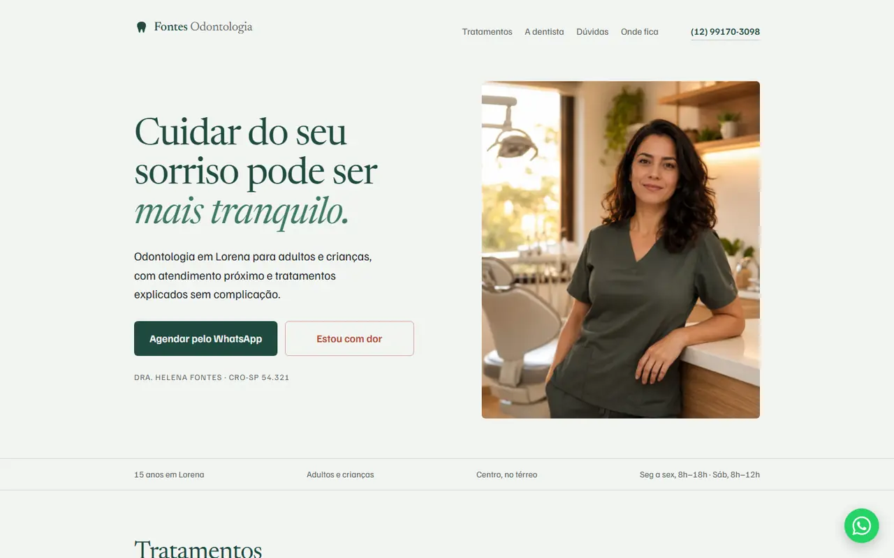
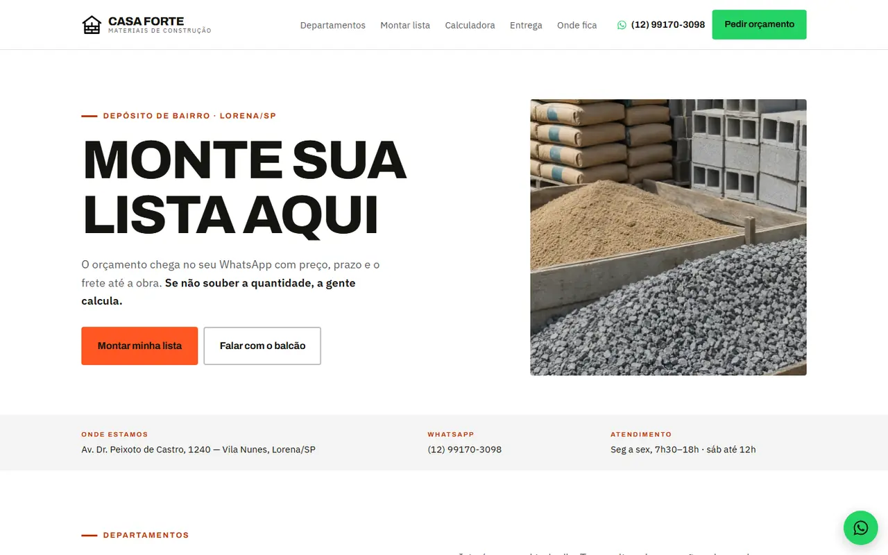
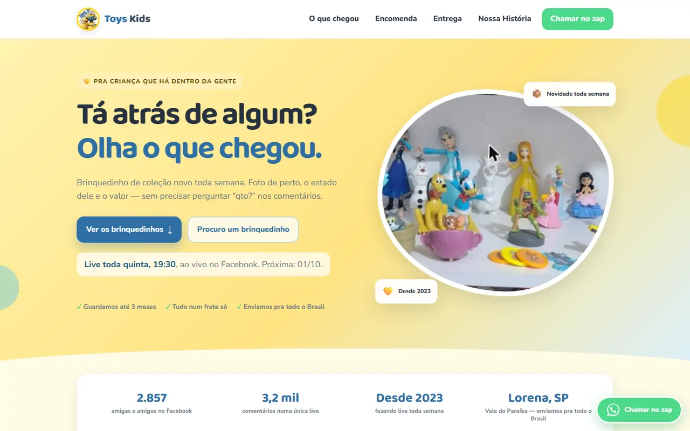
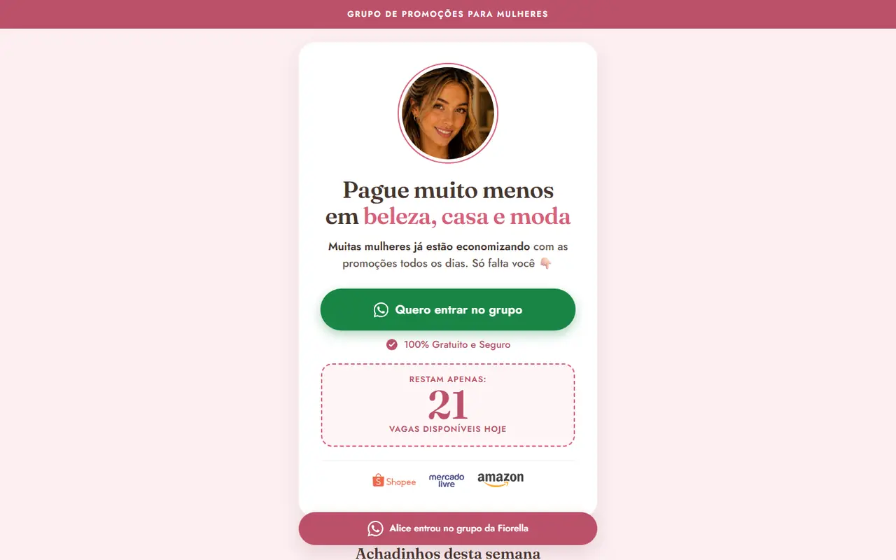
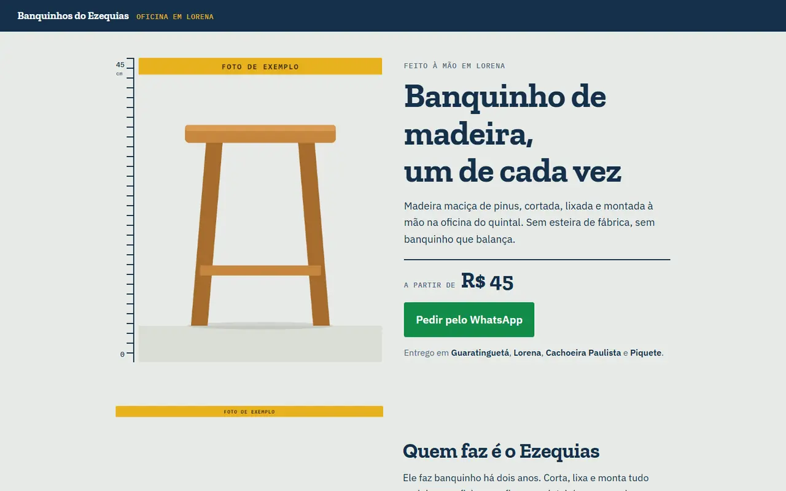
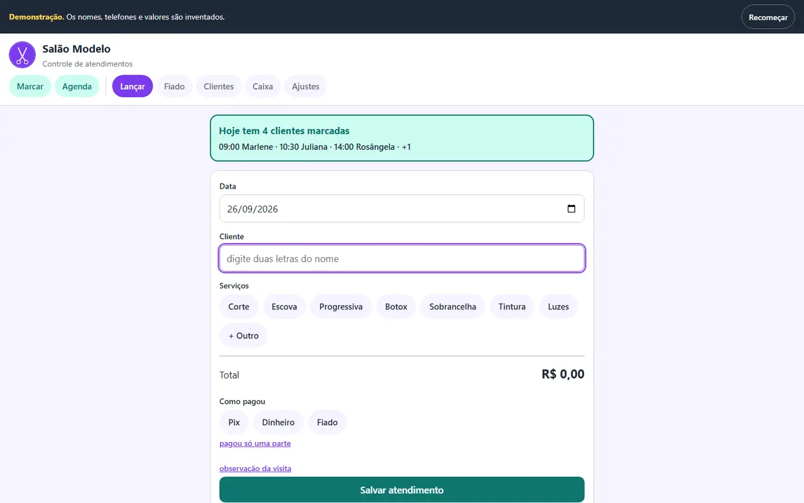
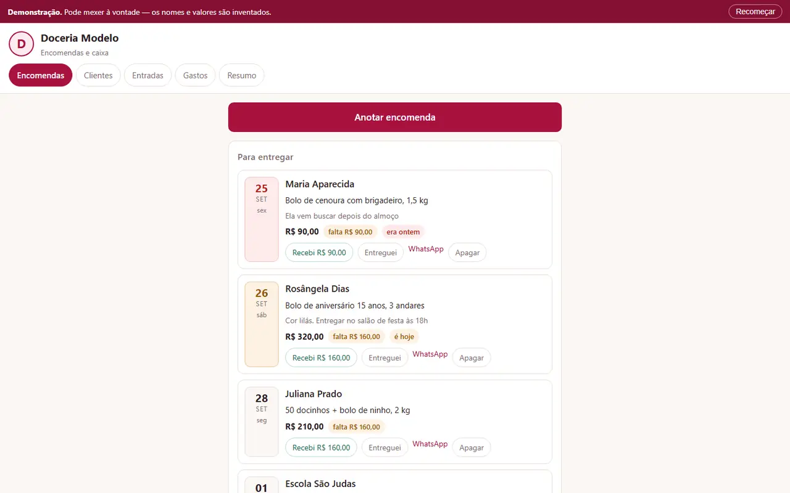

Estático
Direto, elegante e rápido. Ideal para apresentar sua empresa com clareza e sem distrações.

Quando alguém encontra sua empresa na internet, o que faz essa pessoa escolher você?
Pedro Freitas Web · Sistemas · 2026
(01) Antes de escolher
consumidores pesquisam negócios locais na internet.
Fonte: BrightLocal, 2026
Antes de mandar uma mensagem, pedir um orçamento ou visitar uma empresa, muita gente pesquisa primeiro.
E nessa hora, seu site ajuda a decidir se sua empresa parece profissional, confiável e preparada pra atender.
(02) A primeira impressão
Quem procura o serviço que você oferece olha mais de uma empresa antes de decidir.
Um bom site deixa claro, em poucos segundos:
(03) Trabalhos · 06 projetos
Seu site precisa fazer esse trabalho por você.
Escolha a experiência que combina com sua empresa.
Cada empresa pede um tipo de presença diferente. Os exemplos abaixo usam empresas fictícias.
Direto, elegante e rápido. Ideal para apresentar sua empresa com clareza e sem distrações.

Movimento na medida certa. Transições e animações que deixam a navegação mais marcante sem pesar.
Uma experiência mais viva. Elementos que respondem ao scroll, ao mouse e às ações de quem está navegando.

Exemplo · Fig. 03
Casa Forte
O cliente monta a lista e o pedido chega pronto no WhatsApp.
Ver projetoVocê não escolhe um template. Você escolhe o estilo da experiência — e o site é criado em cima da identidade e das necessidades da sua empresa.
Trabalhos reais
Além dos exemplos, estes são sites que já desenvolvi para projetos reais.
Site · Catálogo

Brinquedos de coleção com foto, estado e valor, atualizados toda semana. O “Quero!” já abre o WhatsApp com o nome do brinquedo.
Ver projetoSite · Landing page

Página de entrada do grupo de promoções no WhatsApp, com os achadinhos da semana.
Ver projetoSite · Vendas

Página de venda dos banquinhos de madeira feitos à mão, com pedido direto pelo WhatsApp.
Em andamento — fotos reais chegandoMas nem todo problema se resolve com um site.
Às vezes, o negócio precisa de um sistema.
Ferramentas pra organizar, automatizar e facilitar o dia a dia de um negócio.
Os exemplos abaixo são versões de demonstração, com dados inventados: pode mexer à vontade.

S—01
Mostra quem deve o quê, e cobra pelo WhatsApp com um toque.

S—02
Mostra quanto falta receber de cada bolo e o que entrega hoje.
S—03
O que entrou, o que está sendo feito e o que já está pronto.
(04) Como funciona
Pelo WhatsApp, contando o que a sua empresa faz.
Juntos, escolhemos o nível de movimento e interação que mais combina com sua empresa.
Com o seu WhatsApp, pronto pra receber cliente.
(05) Contato
Me chama no WhatsApp e conta o que você precisa. Sem formulário.
Chamar no WhatsApp